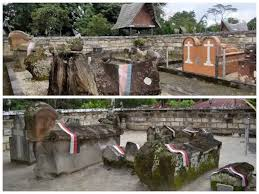

★ 4,3-4,5
MAKAM RAJA SIDABUTAR
Makam Raja Sidabutar adalah situs makam megalitik berusia sekitar 500 tahun di Desa Tomok, Samosir, Sumatera Utara.
★ 4,7
BUKIT HOLBUNG
Bukit Holbung, yang berlokasi di Desa Hariar Pohan, Kecamatan Harian, Kabupaten Samosir, Sumatera Utara,
adalah destinasi savana hijau ikonik yang menawarkan panorama Danau Toba dari ketinggian
★ 4,6-4,7
SIBEA-BEA
Bukit Sibea-bea adalah destinasi religi yang terletak di Harian Boho, Kabupaten Samosir, Sumatera Utara, Indonesia.
Daya tarik utama objek wisata ini adalah hadirnya sebuah patung Yesus..
★ 4,8
PASIR PUTIH PARBABA
Pantai Pasir Putih Parbaba adalah destinasi populer di tepi Danau Toba, tepatnya di Desa Hutabalon, Kecamatan Pangururan, Kabupaten Samosir, Sumatera Utara.